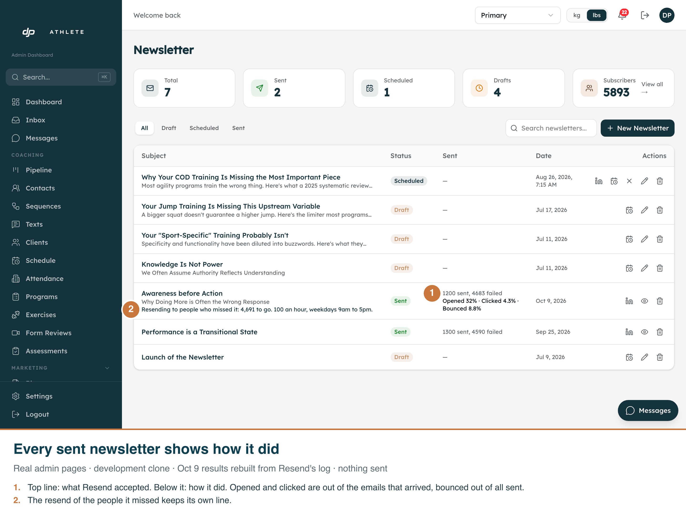
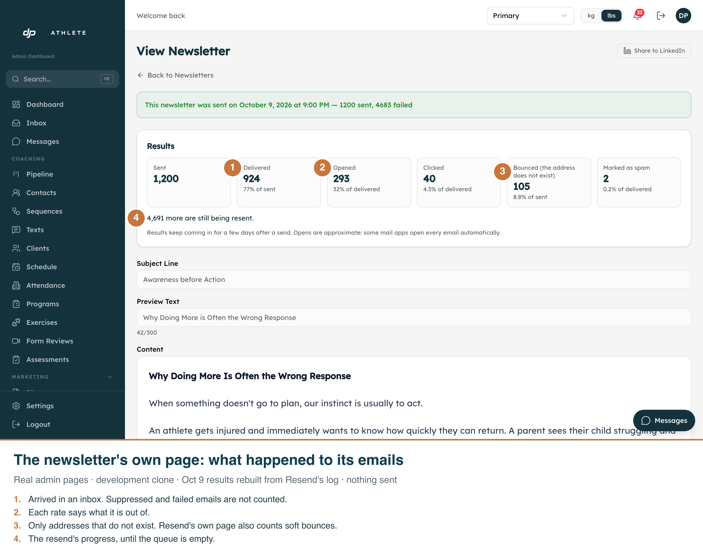
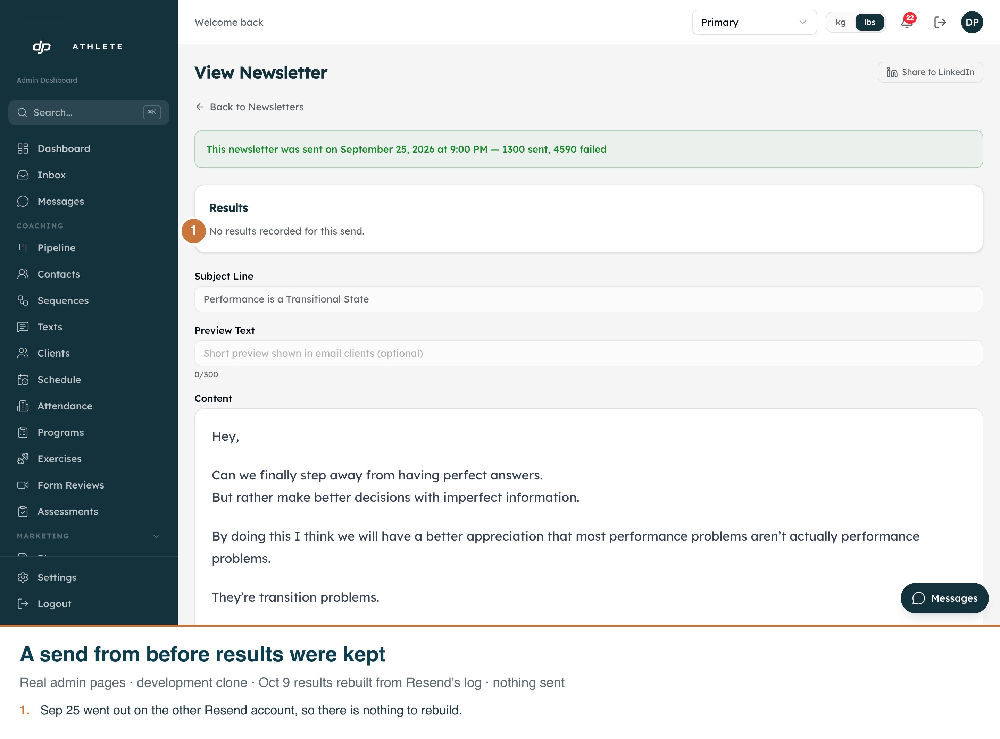

Real admin pages, development clone, 1440 px at 2x. Captured by scripts/capture-newsletter-results.mjs. The 9 October results were rebuilt from Resend's real log by scripts/backfill-newsletter-results.ts --apply on the clone; nothing was sent. Admin is light-only.


